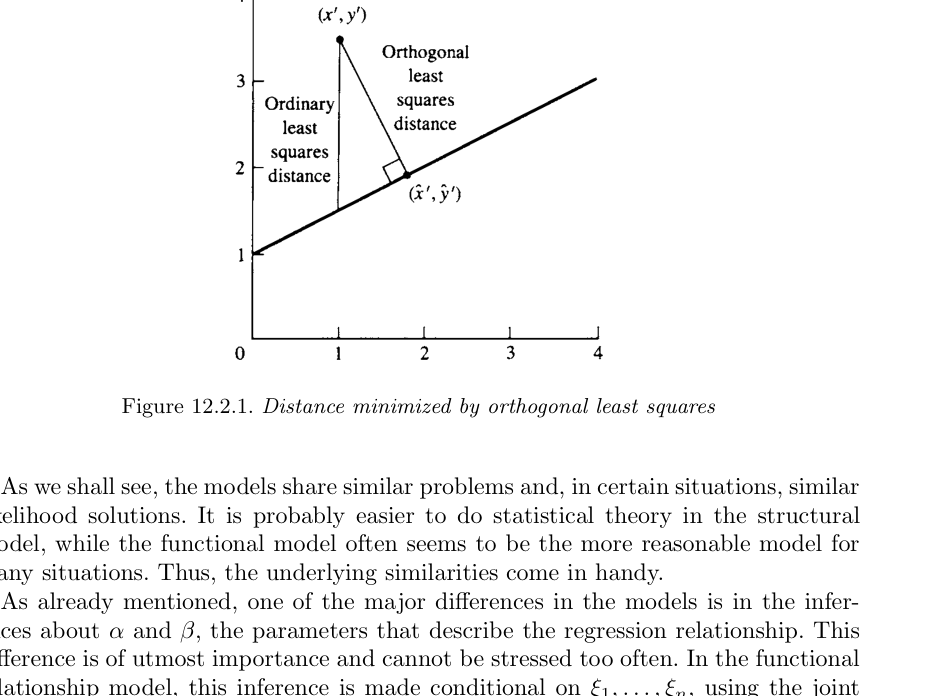
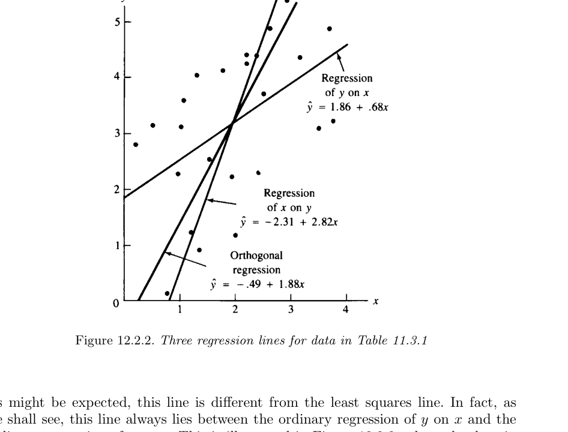
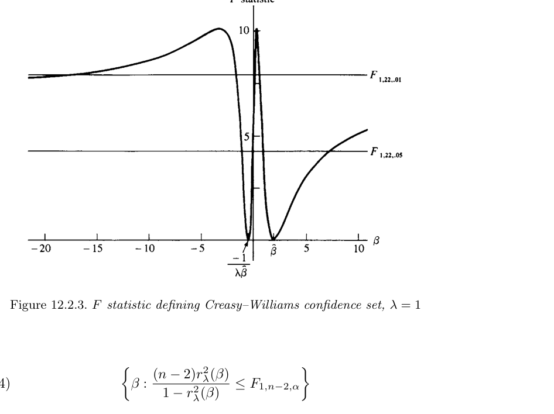
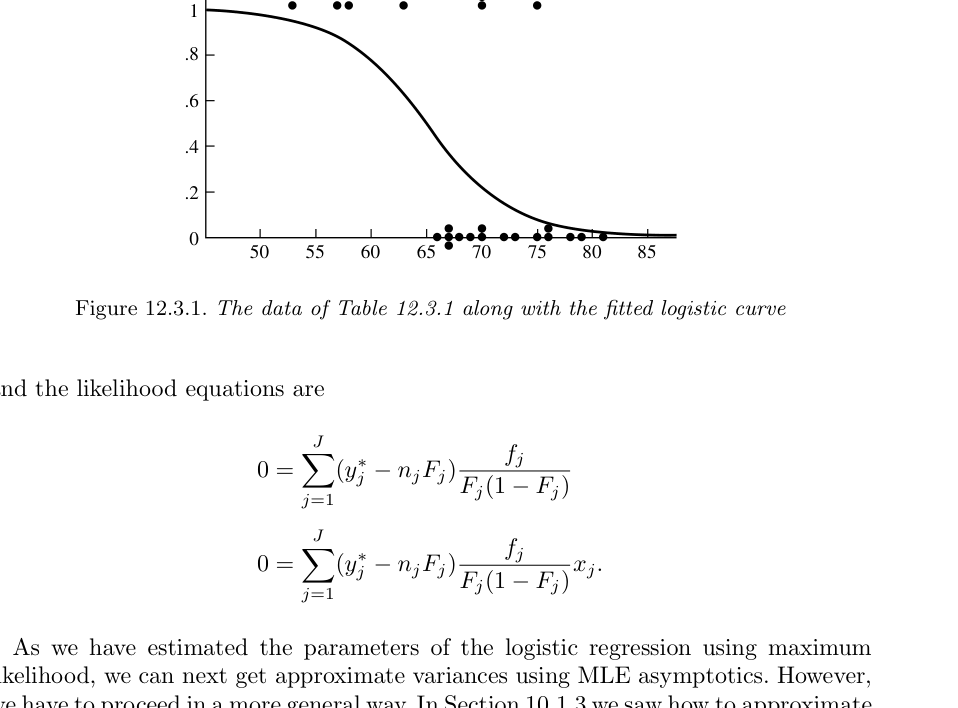
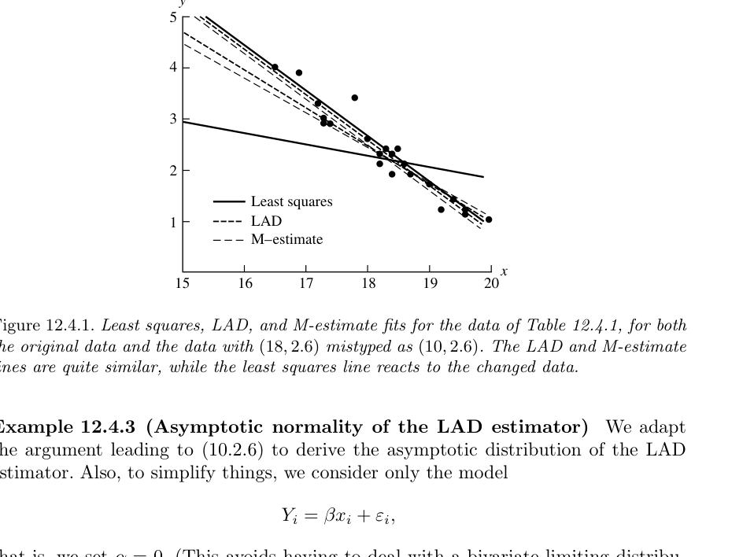

12 회귀모형
“So startling would his results appear to the uninitiated that until they learned the processes by which he had arrived at them they might well consider him as a necromancer.”
— Dr. Watson, speaking about Sherlock Holmes, A Study in Scarlet
- 11장에서는 고전적 선형모형(classic linear models)을 다루었다.
- 특히 ANOVA와 단순선형회귀는 모두 정규오차를 갖는 선형모형에 기반한다.
- 12장에서는 이 선형모형을 실제 문제에 맞게 확장한다.
- 주요 확장은 세 가지이다.
- 설명변수에도 오차가 있는 회귀(regression with errors in variables, EIV)
- 이항 반응변수를 다루는 로지스틱 회귀(logistic regression)
- 이상치와 모형 위반에 덜 민감한 로버스트 회귀(robust regression)
12.1 도입
12.1.1 문제의식
- 11장의 단순선형회귀에서는 설명변수 \(x_i\)가 오차 없이 관측되는 고정값이라고 보았다.
- 하지만 실제 자료에서는 설명변수 자체도 측정오차를 가질 수 있다.
- 예를 들어 온도계, 기압계, 생물학적 측정 장비 등은 모두 측정오차를 포함한다.
- 이런 경우 단순선형회귀와는 전혀 다른 문제가 발생한다.
12.1.2 일반화된 선형모형 관점
- 11장의 선형회귀에서는
\[ E(Y_i\mid x_i)=\alpha+\beta x_i \]
를 가정했다. - 하지만 반응변수가 Bernoulli처럼 0과 1 사이의 평균만 가질 수 있는 경우, 평균을 직접 선형함수로 두면 문제가 생긴다. - 예를 들어 \(\alpha+\beta x\)는 0보다 작거나 1보다 클 수 있지만 Bernoulli 평균은 확률이므로 반드시 \([0,1]\) 안에 있어야 한다. - 이런 문제를 해결하기 위해 평균 자체가 아니라 평균의 변환, 특히 logit을 선형모형으로 둔다. - 이것이 로지스틱 회귀의 기본 아이디어이다.
12.1.3 로버스트 회귀의 필요성
- 선형모형을 유지하더라도, 최소제곱 기준은 이상치에 매우 민감하다.
- 10장에서 평균 대신 중앙값, M-estimator 등을 고려했던 것처럼, 회귀에서도 최소제곱 대신 절댓값 손실 또는 Huber형 손실을 사용할 수 있다.
- 이 장의 후반부는 회귀에서의 로버스트 추정을 다룬다.
12.2 설명변수 오차 회귀
12.2.1 EIV 모형의 기본 생각
- EIV는 errors in variables의 약자이다.
- measurement error model이라고도 한다.
- 일반 단순선형회귀에서는
\[ Y_i=\alpha+\beta x_i+\epsilon_i \tag{12.2.1} \]
에서 \(x_i\)를 오차 없이 알려진 값으로 본다. - 그러나 EIV에서는 \(x_i\) 자체를 직접 관측하지 못하고, 오차가 섞인 \(X_i\)를 관측한다. - 일반적으로 관측쌍 \((X_i,Y_i)\)의 평균이 다음 선형관계를 만족한다고 본다.
\[ EY_i=\alpha+\beta(EX_i). \tag{12.2.2} \]
- 다음과 같이 쓰면
\[ EY_i=\eta_i, \qquad EX_i=\xi_i, \]
평균들 사이의 관계는
\[ \eta_i=\alpha+\beta\xi_i. \tag{12.2.3} \]
- \(\xi_i\)와 \(\eta_i\)는 직접 측정되지 않는 latent variables로 볼 수 있다.
12.2.2 측정오차 모형
- 관측쌍 \((X_i,Y_i)\)가 독립이고 다음을 따른다고 하자.
\[ Y_i=\alpha+\beta\xi_i+\epsilon_i, \qquad \epsilon_i\sim N(0,\sigma_\epsilon^2), \]
\[ X_i=\xi_i+\delta_i, \qquad \delta_i\sim N(0,\sigma_\delta^2). \tag{12.2.4} \]
- 여기서
- \(\xi_i\)는 진짜 설명변수 값 또는 latent predictor이다.
- \(X_i\)는 \(\xi_i\)를 오차와 함께 측정한 값이다.
- \(Y_i\)도 선형관계 주변에서 오차를 갖는다.
- \(\epsilon_i\)와 \(\delta_i\)는 서로 독립이라고 가정한다.
- 정규성은 흔히 사용되지만 반드시 필요한 것은 아니다.
- 다만 정규성을 가정하면 likelihood 분석이 가능해진다.
- 그러나 EIV 모형에서는 정규성 때문에 오히려 예기치 않은 어려움이 생기기도 한다.
12.2.3 예제: 기압 추정
- 1800년대 스코틀랜드 물리학자 J. D. Forbes는 물의 끓는점으로부터 고도를 추정하려 했다.
- 고도는 기압과 관련되어 있으며, 당시 기압계는 깨지기 쉬웠다.
- 따라서 끓는점으로부터 \(\log(\text{pressure})\)를 추정하는 것이 유용했다.
- 자료는 다음과 같다.
| Boiling point \((^\circ F)\) | \(\log(\text{pressure})\) |
|---|---|
| 194.5 | 1.3179 |
| 197.9 | 1.3502 |
| 199.4 | 1.3646 |
| 200.9 | 1.3782 |
| 201.4 | 1.3806 |
| 203.6 | 1.4004 |
| 209.5 | 1.4547 |
| 210.7 | 1.4630 |
| 212.2 | 1.4780 |
- 끓는점과 기압 모두 측정오차를 가질 수 있으므로 EIV 모형이 자연스럽다.
12.3 함수적 관계와 구조적 관계
12.3.1 왜 두 관계를 구분하는가?
- EIV 모형에는 두 가지 해석이 있다.
- linear functional relationship model
- linear structural relationship model
- 이름은 혼란스럽지만, 중요한 차이는 \(\xi_i\)를 어떻게 다루는가이다.
- functional model에서는 \(\xi_i\)를 고정된 미지 모수로 본다.
- structural model에서는 \(\xi_i\) 자체가 어떤 분포에서 나온 확률변수라고 본다.
12.3.2 선형 함수적 관계 모형
- 다음 모형을 생각한다.
\[ Y_i=\alpha+\beta\xi_i+\epsilon_i, \qquad \epsilon_i\sim N(0,\sigma_\epsilon^2), \]
\[ X_i=\xi_i+\delta_i, \qquad \delta_i\sim N(0,\sigma_\delta^2). \tag{12.2.5} \]
- 여기서 \(\xi_1,\ldots,\xi_n\)은 고정된 미지 모수이다.
- \(\epsilon_i\)와 \(\delta_i\)는 독립이다.
- 주요 관심 모수는 \(\alpha,\beta\)이다.
- 추론은 \(\xi_1,\ldots,\xi_n\)에 조건을 둔 결합분포를 사용한다.
12.3.3 선형 구조적 관계 모형
- structural model에서는 위 모형에 추가로 \(\xi_i\)가 확률변수라고 가정한다.
\[ Y_i=\alpha+\beta\xi_i+\epsilon_i, \qquad \epsilon_i\sim N(0,\sigma_\epsilon^2), \]
\[ X_i=\xi_i+\delta_i, \qquad \delta_i\sim N(0,\sigma_\delta^2), \]
\[ \xi_i\stackrel{iid}{\sim}N(\xi,\sigma_\xi^2). \tag{12.2.6} \]
- \(\epsilon_i\), \(\delta_i\), \(\xi_i\)들은 서로 독립이라고 가정한다.
- 이 경우 추론은 \(\xi_i\)들을 적분하여 제거한 marginal distribution을 사용한다.
12.3.4 두 모형의 관계
- functional model은 structural model의 조건부 버전처럼 볼 수 있다.
- functional model에서 일치성을 갖는 추정량은 structural model에서도 보통 일치성을 갖는다.
- 하지만 structural model에서 일치적인 추정량이 functional model에서도 항상 일치적인 것은 아니다.
- structural model에서 모수가 식별 불가능하면 functional model에서도 식별 불가능하다.
12.4 최소제곱 해법
12.4.1 왜 보통 최소제곱이 부적절한가?
- 일반 단순선형회귀에서는 \(x_i\)가 정확히 관측되므로 수직거리(vertical distance)를 최소화하는 것이 자연스럽다.
- 하지만 EIV에서는 \(x_i\)에도 오차가 있으므로 수직거리만 고려하면 \(x\)축 방향의 오차를 무시하게 된다.
- 따라서 EIV에서는 직선까지의 수직거리가 아니라 직선에 수직인 거리, 즉 직교거리(orthogonal distance)를 고려하는 것이 자연스럽다.
- 이 방법을 orthogonal least squares 또는 total least squares라고 한다.

12.4.2 직선에 가장 가까운 점
- 한 관측점 \((x',y')\)가 있고 직선이
\[ y=a+bx \]
라고 하자. - 이 점에서 직선에 내린 수선의 발을 \((\hat x,\hat y)\)라고 하면
\[ \hat x= \frac{by'+x'-ab}{1+b^2}, \]
\[ \hat y= a+ \frac{b}{1+b^2}(by'+x'-ab). \tag{12.2.7} \]
12.4.3 직교거리 제곱합
- 관측자료 \((x_i,y_i)\)에 대해 직교거리 제곱합은
\[ \sum_{i=1}^{n} \left[ (x_i-\hat x_i)^2+ (y_i-\hat y_i)^2 \right]. \]
- 계산하면 이는 다음과 같다.
\[ \sum_{i=1}^{n} \left[ (x_i-\hat x_i)^2+ (y_i-\hat y_i)^2 \right] = \frac1{1+b^2} \sum_{i=1}^{n} \{y_i-(a+bx_i)\}^2. \tag{12.2.8} \]
12.4.4 기울기 추정량
- 고정된 \(b\)에서 \(a\)를 최소화하면 이전 회귀와 같이
\[ a=\bar y-b\bar x \]
이다. - 따라서 \(b\)는 다음을 최소화한다.
\[ \frac1{1+b^2} \sum_{i=1}^{n} \{(y_i-\bar y)-b(x_i-\bar x)\}^2. \tag{12.2.9} \]
- 다음 표기법을 사용한다.
\[ S_{xx}=\sum_{i=1}^{n}(x_i-\bar x)^2, \quad S_{yy}=\sum_{i=1}^{n}(y_i-\bar y)^2, \]
\[ S_{xy}=\sum_{i=1}^{n}(x_i-\bar x)(y_i-\bar y). \tag{12.2.10} \]
- 직교 최소제곱 직선은
\[ a=\bar y-b\bar x \]
와
\[ b= \frac{ -(S_{xx}-S_{yy}) + \sqrt{(S_{xx}-S_{yy})^2+4S_{xy}^2} }{ 2S_{xy} } \tag{12.2.11} \]
로 주어진다.
12.4.5 세 회귀직선 비교
- 직교 최소제곱선은 보통 최소제곱선과 다르다.
- 보통 최소제곱에서 \(y\)를 \(x\)에 회귀하면 수직거리를 최소화한다.
- \(x\)를 \(y\)에 회귀한 뒤 식을 \(y\)에 대해 풀면 또 다른 직선이 나온다.
- 직교 최소제곱선은 이 두 직선 사이에 위치한다.

- Table 11.3.1 자료에서는 다음 직선들이 비교된다.
- \(y\) on \(x\) 회귀: \(\hat y=1.86+0.68x\)
- \(x\) on \(y\) 회귀를 변환한 직선: \(\hat y=-2.31+2.82x\)
- 직교 회귀: \(\hat y=-0.49+1.88x\)
12.5 최대가능도추정
12.5.1 functional model의 likelihood
- 정규 functional relationship model에서
\[ Y_i\sim N(\alpha+\beta\xi_i,\sigma_\epsilon^2), \qquad X_i\sim N(\xi_i,\sigma_\delta^2) \]
이고 서로 독립이라고 하자. - 관측값을 \((x,y)=((x_1,y_1),\ldots,(x_n,y_n))\)라고 하면 likelihood는
\[ L(\alpha,\beta,\xi_1,\ldots,\xi_n,\sigma_\delta^2,\sigma_\epsilon^2\mid x,y) \]
\[ = \frac1{(2\pi)^n} \frac1{(\sigma_\delta^2\sigma_\epsilon^2)^{n/2}} \exp\left[ -\frac{\sum_{i=1}^{n}(x_i-\xi_i)^2}{2\sigma_\delta^2} \right] \exp\left[ -\frac{\sum_{i=1}^{n}(y_i-(\alpha+\beta\xi_i))^2}{2\sigma_\epsilon^2} \right]. \tag{12.2.12} \]
12.5.2 finite maximum이 없는 문제
- 이 likelihood는 finite maximum을 갖지 않는다.
- 예를 들어 \(\xi_i=x_i\)로 두고 \(\sigma_\delta^2\to0\)로 보내면 likelihood 값이 무한대로 간다.
- 따라서 제한 없이 MLE를 구할 수 없다.
- 이는 EIV 모형의 중요한 난점이다.
12.5.3 분산비를 알고 있다고 가정
- 흔한 해결책은 다음을 가정하는 것이다.
\[ \sigma_\delta^2=\lambda\sigma_\epsilon^2, \qquad \lambda>0\ \text{known}. \]
- 즉, 두 오차분산의 비율은 알고 있다고 본다.
- 이 가정은 비교적 약하면서도 모형을 잘 작동하게 만든다.
12.5.4 제한된 likelihood
- 위 가정 아래 likelihood는 다음과 같이 쓸 수 있다.
\[ L(\alpha,\beta,\xi_1,\ldots,\xi_n,\sigma_\delta^2\mid x,y) = \frac1{(2\pi)^n} \frac{\lambda^{n/2}}{(\sigma_\delta^2)^n} \]
\[ \times \exp\left[ -\frac{ \sum_{i=1}^{n} \{(x_i-\xi_i)^2+\lambda(y_i-(\alpha+\beta\xi_i))^2\} }{2\sigma_\delta^2} \right]. \tag{12.2.13} \]
12.5.5 \(\xi_i\)에 대한 최대화
- \(\alpha,\beta,\sigma_\delta^2\)가 고정되었을 때 \(\xi_i\)를 최대화하려면
\[ \sum_{i=1}^{n} \{(x_i-\xi_i)^2+\lambda(y_i-(\alpha+\beta\xi_i))^2\} \]
를 최소화하면 된다. - 각 \(i\)에 대해 최소점은
\[ \xi_i^* = \frac{x_i+\lambda\beta(y_i-\alpha)}{1+\lambda\beta^2}. \]
- 대입하면
\[ \sum_{i=1}^{n} \{(x_i-\xi_i^*)^2+\lambda(y_i-(\alpha+\beta\xi_i^*))^2\} = \frac{\lambda}{1+\lambda\beta^2} \sum_{i=1}^{n} \{y_i-(\alpha+\beta x_i)\}^2. \]
12.5.6 \(\alpha,\beta\)의 MLE
- 변환을
\[ \alpha^*=\sqrt\lambda\,\alpha, \qquad \beta^*=\sqrt\lambda\,\beta, \qquad y_i^*=\sqrt\lambda\,y_i \tag{12.2.15} \]
라고 두면 직교 최소제곱 문제와 동일한 형태가 된다. - 따라서
\[ \hat\alpha=\bar y-\hat\beta\bar x \]
이고
\[ \hat\beta = \frac{ -(S_{xx}-\lambda S_{yy}) + \sqrt{(S_{xx}-\lambda S_{yy})^2+4\lambda S_{xy}^2} }{ 2\lambda S_{xy} }. \tag{12.2.16} \]
- \(\lambda=1\)이면 직교 최소제곱 해와 같다.
- \(\lambda\to0\)이면 보통 최소제곱의 \(y\) on \(x\) 기울기 \(S_{xy}/S_{xx}\)로 수렴한다.
- \(\lambda\to\infty\)이면 \(x\) on \(y\) 회귀를 뒤집은 기울기 \(S_{yy}/S_{xy}\)로 수렴한다.
12.5.7 \(\sigma_\delta^2\)의 MLE
- \(\hat\alpha,\hat\beta\)를 대입한 뒤 \(\sigma_\delta^2\)에 대해 최대화하면
\[ \hat\sigma_\delta^2 = \frac1{2n} \frac{\lambda}{1+\lambda\hat\beta^2} \sum_{i=1}^{n} \{y_i-(\hat\alpha+\hat\beta x_i)\}^2. \tag{12.2.18} \]
- \(\hat\sigma_\epsilon^2=\hat\sigma_\delta^2/\lambda\)이다.
- 주의할 점:
- \(\hat\alpha\)와 \(\hat\beta\)는 일치추정량이다.
- 하지만 functional model에서 \(\hat\sigma_\delta^2\)는 일치추정량이 아니며, 극한적으로 \(\sigma_\delta^2/2\)로 수렴한다.
12.5.8 structural model의 marginal distribution
- structural model에서 \(\xi_i\)를 적분하면 \((X_i,Y_i)\)는 이변량 정규분포를 따른다.
\[ (X_i,Y_i) \sim \text{bivariate normal} \left( \xi,\, \alpha+\beta\xi,\, \sigma_\delta^2+\sigma_\xi^2,\, \sigma_\epsilon^2+\beta^2\sigma_\xi^2,\, \beta\sigma_\xi^2 \right). \tag{12.2.19} \]
- likelihood 방정식은 표본평균, 표본분산, 표본공분산을 모집단 대응량과 맞추는 형태로 나온다.
\[ \bar y=\hat\alpha+\hat\beta\hat\xi, \qquad \bar x=\hat\xi, \]
\[ \frac1nS_{yy}=\hat\sigma_\epsilon^2+\hat\beta^2\hat\sigma_\xi^2, \]
\[ \frac1nS_{xx}=\hat\sigma_\delta^2+\hat\sigma_\xi^2, \]
\[ \frac1nS_{xy}=\hat\beta\hat\sigma_\xi^2. \tag{12.2.20} \]
- 방정식은 5개인데 미지수가 6개이므로 제한이 없으면 식별 가능하지 않다.
- 여기서도
\[ \sigma_\delta^2=\lambda\sigma_\epsilon^2 \]
를 가정하면 모형이 식별 가능해진다.
12.5.9 structural model의 분산 추정량
- \(\sigma_\delta^2=\lambda\sigma_\epsilon^2\) 아래에서 \(\hat\alpha,\hat\beta\)는 functional model과 같은 식 (12.2.16)을 갖는다.
- 그러나 분산 추정량은 다르다.
\[ \hat\sigma_\delta^2 = \frac1n\left( S_{xx}-\frac{S_{xy}}{\hat\beta} \right), \]
\[ \hat\sigma_\epsilon^2 = \frac{\hat\sigma_\delta^2}{\lambda} = \frac1n(S_{yy}-\hat\beta S_{xy}), \]
\[ \hat\sigma_\xi^2 = \frac1n\frac{S_{xy}}{\hat\beta}. \tag{12.2.21} \]
- structural model에서는 이 분산 추정량들이 일치추정량이다.
12.6 신뢰집합
12.6.1 왜 EIV 신뢰구간은 어렵나?
- EIV 모형에서 \(\beta\)의 신뢰집합 구성은 매우 어렵다.
- 근사 likelihood 방법을 사용하여 유한 길이의 근사구간을 만들 수는 있다.
- 그러나 모든 모수값에서 명목 신뢰수준을 유지하는 유한 길이 구간은 존재하기 어렵다.
- Gleser와 Hwang의 결과에 따르면, 항상 finite length인 slope 구간추정량은 confidence coefficient가 0이 될 수 있다.
12.6.2 정보량을 결정하는 모수
- 다음 비율을 생각한다.
\[ \tau^2=\frac{\sigma_\xi^2}{\sigma_\delta^2}. \]
- \(\tau^2\)는 자료가 slope \(\beta\)를 얼마나 잘 결정할 수 있는지를 나타낸다.
- \(\tau^2\to0\)이면 latent predictor \(\xi_i\)들의 변동이 거의 없어진다.
- 그러면 사실상 직선을 고유하게 맞출 정보가 사라진다.
12.6.3 근사 신뢰구간
- \(\hat\beta\)의 근사분산 추정량을 \(\hat\sigma_\beta^2\)라고 하면 CLT와 Slutsky 정리에 의해 다음이 근사 신뢰구간이다.
\[ \hat\beta - z_{\alpha/2}\frac{\hat\sigma_\beta}{\sqrt n} \le \beta \le \hat\beta + z_{\alpha/2}\frac{\hat\sigma_\beta}{\sqrt n}. \]
- Gleser의 수정형은 다음과 같다.
\[ \hat\beta - t_{n-2,\alpha/2} \frac{\hat\sigma_\beta}{\sqrt{n-2}} \le \beta \le \hat\beta + t_{n-2,\alpha/2} \frac{\hat\sigma_\beta}{\sqrt{n-2}}. \tag{12.2.22} \]
- 이는 근사적으로는 좋을 수 있지만 finite length이므로 모든 모수값에서 정확한 coverage를 보장하지 못한다.
12.6.4 Creasy–Williams 신뢰집합
- 정확한 신뢰집합은 infinite length를 가질 수밖에 없다.
- Creasy–Williams 신뢰집합은 다음 성질에 기반한다.
\[ Cov(\beta\lambda Y_i+X_i,\;Y_i-\beta X_i)=0. \]
- 표본상관계수 \(r_\lambda(\beta)\)를 다음처럼 정의한다.
\[ r_\lambda(\beta) = \frac{ \beta\lambda S_{yy} + (1-\beta^2\lambda)S_{xy} - \beta S_{xx} }{ \sqrt{ (\beta^2\lambda^2S_{yy}+2\beta\lambda S_{xy}+S_{xx}) (S_{yy}-2\beta S_{xy}+\beta^2S_{xx}) } }. \tag{12.2.23} \]
- 그러면
\[ \frac{\sqrt{n-2}\,r_\lambda(\beta)} {\sqrt{1-r_\lambda^2(\beta)}} \sim t_{n-2}. \]
- 따라서 다음 집합은 \(1-\alpha\) 신뢰집합이다.
\[ \left\{ \beta: \frac{(n-2)r_\lambda^2(\beta)} {1-r_\lambda^2(\beta)} \le F_{1,n-2,\alpha} \right\}. \tag{12.2.24} \]

12.6.5 Creasy–Williams 집합의 특징
- 이 신뢰집합은 다음 형태 중 하나가 될 수 있다.
- 두 개의 유한한 서로소 구간
- 하나의 유한 구간과 두 개의 무한 구간
- 전체 실수선
- 또한 모든 \(\beta\)에 대해
\[ -r_\lambda(\beta) = r_\lambda\left(-\frac1{\lambda\beta}\right) \]
이므로, \(\beta\)가 집합에 있으면 \(-1/(\lambda\beta)\)도 집합에 있다. - 따라서 이 집합만으로는 slope의 부호를 확정하지 못한다. - 이는 EIV에서 slope 추론이 일반 회귀보다 훨씬 어렵다는 것을 보여준다.
12.7 로지스틱 회귀
12.7.1 GLM의 세 구성요소
- 일반화 선형모형(GLM)은 세 요소로 구성된다.
- Random component
- 반응변수 \(Y_1,\ldots,Y_n\)이다.
- 서로 독립이며, 같은 exponential family에 속하는 분포를 가진다.
- 예: normal, binomial, Poisson 등.
- Systematic component
- 예측변수의 함수이며 모수에 대해 선형이다.
- 이 장에서는 주로 \(\alpha+\beta x_i\)를 사용한다.
- Link function
- 평균 \(\mu_i=EY_i\)와 systematic component를 연결한다.
\[ g(\mu_i)=\alpha+\beta x_i. \]
12.7.2 로지스틱 회귀 모형
- 반응변수가 Bernoulli라고 하자.
\[ Y_i\sim Bernoulli(\pi_i), \qquad E(Y_i)=\pi_i=P(Y_i=1). \]
- 로지스틱 회귀에서는 성공확률의 log-odds가 \(x_i\)의 선형함수라고 가정한다.
\[ \log\left(\frac{\pi_i}{1-\pi_i}\right) = \alpha+\beta x_i. \tag{12.3.1} \]
- 왼쪽은 logit 또는 log-odds이다.
- Bernoulli 분포의 자연모수가 logit이므로, logistic regression은 canonical link를 사용하는 GLM이다.
12.7.3 확률 함수 형태
- 식 (12.3.1)을 풀면
\[ \pi_i= \frac{e^{\alpha+\beta x_i}} {1+e^{\alpha+\beta x_i}}. \]
- 일반적으로
\[ \pi(x) = \frac{e^{\alpha+\beta x}} {1+e^{\alpha+\beta x}}. \tag{12.3.2} \]
- 항상
\[ 0<\pi(x)<1 \]
이므로 확률모형으로 적절하다.
12.7.4 로지스틱 함수의 기울기
- 미분하면
\[ \frac{d\pi(x)}{dx} = \beta\pi(x)\{1-\pi(x)\}. \tag{12.3.3} \]
- \(\pi(x)\{1-\pi(x)\}>0\)이므로
- \(\beta>0\)이면 \(\pi(x)\)는 증가한다.
- \(\beta<0\)이면 \(\pi(x)\)는 감소한다.
- \(\beta=0\)이면 \(\pi(x)\)는 상수이다.
- 또한
\[ \pi\left(-\frac{\alpha}{\beta}\right)=\frac12. \]
12.7.5 \(\alpha\)와 \(\beta\)의 해석
- \(x=0\)일 때
\[ \alpha=\log\left(\frac{\pi(0)}{1-\pi(0)}\right) \]
이다. - 따라서 \(\alpha\)는 \(x=0\)에서의 log-odds이다. - \(x\)가 한 단위 증가할 때 log-odds 변화량은
\[ \beta. \]
- 실제 odds ratio는
\[ e^\beta = \frac{\pi(x+1)/(1-\pi(x+1))} {\pi(x)/(1-\pi(x))}. \tag{12.3.4} \]
- 따라서 \(e^\beta\)는 \(x\)가 한 단위 증가할 때 odds가 몇 배가 되는지를 나타낸다.
\[ \frac{\pi(x+1)}{1-\pi(x+1)} = e^\beta \frac{\pi(x)}{1-\pi(x)}. \tag{12.3.5} \]
12.7.6 다른 link 함수
- 로지스틱 회귀는 \(\pi(x)=F(\alpha+\beta x)\)에서 \(F\)가 logistic cdf인 경우이다.
- \(F\)가 표준정규 cdf이면 probit regression이다.
- Gumbel cdf를 사용하면 log-log link가 나온다.
12.8 로지스틱 회귀의 추정
12.8.1 왜 최소제곱이 아닌가?
- 선형회귀에서는 \(Y_i\)가 \(\alpha+\beta x_i\)와 직접 연결되어 있어서 RSS를 최소화할 수 있었다.
- 로지스틱 회귀에서는
\[ E(Y_i)=\pi_i \]
이고
\[ \log\left(\frac{\pi_i}{1-\pi_i}\right)=\alpha+\beta x_i \]
이다. - 즉 \(Y_i\)와 \(\alpha+\beta x_i\)가 직접 선형으로 연결되지 않는다. - 따라서 표준적인 추정법은 최대가능도추정이다.
12.8.2 일반 Bernoulli GLM likelihood
- \(Y_i\sim Bernoulli(\pi_i)\)이고
\[ \pi(x_i)=F(\alpha+\beta x_i) \]
라고 하자. - \(F_i=F(\alpha+\beta x_i)\)라고 쓰면 likelihood는
\[ L(\alpha,\beta\mid y) = \prod_{i=1}^{n} F_i^{y_i}(1-F_i)^{1-y_i}. \]
- 로그가능도는
\[ \log L(\alpha,\beta\mid y) = \sum_{i=1}^{n} \left[ \log(1-F_i) + y_i\log\left(\frac{F_i}{1-F_i}\right) \right]. \]
12.8.3 likelihood equation
- \(f(w)=dF(w)/dw\)이고 \(f_i=f(\alpha+\beta x_i)\)라고 하자.
- 그러면
\[ \frac{\partial}{\partial\alpha} \log L(\alpha,\beta\mid y) = \sum_{i=1}^{n} (y_i-F_i) \frac{f_i}{F_i(1-F_i)}. \tag{12.3.7} \]
- 그리고
\[ \frac{\partial}{\partial\beta} \log L(\alpha,\beta\mid y) = \sum_{i=1}^{n} (y_i-F_i) \frac{f_i}{F_i(1-F_i)} x_i. \tag{12.3.8} \]
- logistic regression에서는
\[ \frac{f_i}{F_i(1-F_i)}=1 \]
이므로 방정식이 단순해진다.
12.8.4 logistic likelihood equation
- logistic model에서는 MLE가 다음 연립방정식의 해이다.
\[ \sum_{i=1}^{n}(y_i-\pi_i)=0, \]
\[ \sum_{i=1}^{n}(y_i-\pi_i)x_i=0. \]
- 이 방정식은 \(\alpha,\beta\)에 대해 비선형이다.
- 따라서 수치적으로 풀어야 한다.
- 보통 Newton–Raphson 또는 iteratively reweighted least squares를 사용한다.
12.8.5 MLE가 존재하지 않는 경우
- logistic/probit 회귀의 로그가능도는 엄격한 concave 함수이므로, likelihood equation에 해가 있으면 그 해는 유일한 MLE이다.
- 하지만 극단적인 자료에서는 해가 존재하지 않을 수 있다.
- 이때 likelihood의 최대는 \(\alpha,\beta\)가 무한대로 가는 극한에서 얻어진다.
- 이는 logistic model이 \(0<\pi(x)<1\)을 가정하기 때문이다.
- 어떤 자료에서는 확률 0 또는 1이 극한적으로 맞아야 likelihood가 최대가 된다.
12.8.6 예제: Challenger O-ring 자료
- 우주왕복선 O-ring failure는 온도와 관련된 유명한 자료이다.
- 발사 시 온도와 O-ring failure 여부가 다음과 같이 주어졌다.
| Flight no. | 14 | 9 | 23 | 10 | 1 | 5 | 13 | 15 | 4 | 3 | 8 | 17 |
|---|---|---|---|---|---|---|---|---|---|---|---|---|
| Failure | 1 | 1 | 1 | 1 | 0 | 0 | 0 | 0 | 0 | 0 | 0 | 0 |
| Temp. | 53 | 57 | 58 | 63 | 66 | 67 | 67 | 67 | 68 | 69 | 70 | 70 |
| Flight no. | 2 | 11 | 6 | 7 | 16 | 21 | 19 | 22 | 12 | 20 | 18 |
|---|---|---|---|---|---|---|---|---|---|---|---|
| Failure | 1 | 1 | 0 | 0 | 0 | 1 | 0 | 0 | 0 | 0 | 0 |
| Temp. | 70 | 70 | 72 | 73 | 75 | 75 | 76 | 76 | 78 | 79 | 81 |
- logistic regression을 적합하면
\[ \hat\alpha=15.043, \qquad \hat\beta=-0.232. \]
- \(\hat\beta<0\)이므로 온도가 낮을수록 O-ring failure 확률이 커진다.
- Challenger 발사 당시 온도는 \(31^\circ F\)였고, 이 온도에서 failure 확률의 MLE는 약 0.9996이다.

12.8.7 같은 \(x\)에서 여러 Bernoulli 관측이 있는 경우
- \(J\)개의 서로 다른 predictor 값 \(x_1,\ldots,x_J\)가 있다고 하자.
- \(x_j\)에서 \(n_j\)번의 Bernoulli 시행이 관측되고, 성공횟수를 \(Y_j^*\)라고 하자.
- 그러면
\[ Y_j^*\sim Binomial(n_j,\pi(x_j)). \]
- likelihood는
\[ L(\alpha,\beta\mid y^*) = \prod_{j=1}^{J} F_j^{y_j^*}(1-F_j)^{n_j-y_j^*}. \]
- likelihood equation은
\[ 0= \sum_{j=1}^{J} (y_j^*-n_jF_j) \frac{f_j}{F_j(1-F_j)}, \]
\[ 0= \sum_{j=1}^{J} (y_j^*-n_jF_j) \frac{f_j}{F_j(1-F_j)} x_j. \]
12.8.8 정보행렬
- 두 모수 \(\alpha,\beta\)에 대해 정보행렬은
\[ I(\theta_1,\theta_2) = \begin{pmatrix} -\dfrac{\partial^2}{\partial\theta_1^2}\log L & -\dfrac{\partial^2}{\partial\theta_1\partial\theta_2}\log L \\[6pt] -\dfrac{\partial^2}{\partial\theta_1\partial\theta_2}\log L & -\dfrac{\partial^2}{\partial\theta_2^2}\log L \end{pmatrix}. \tag{12.3.9} \]
- logistic regression에서는
\[ I(\alpha,\beta) = \begin{pmatrix} \sum_{j=1}^{J}n_jF_j(1-F_j) & \sum_{j=1}^{J}x_jn_jF_j(1-F_j) \\[6pt] \sum_{j=1}^{J}x_jn_jF_j(1-F_j) & \sum_{j=1}^{J}x_j^2n_jF_j(1-F_j) \end{pmatrix}. \tag{12.3.10} \]
- \(F_j\)에 MLE를 대입한 뒤 정보행렬의 역행렬을 사용하면 \(\hat\alpha,\hat\beta\)의 근사분산을 얻는다.
- \(\hat\beta\)의 표준오차는 역정보행렬의 \((2,2)\) 원소의 제곱근이다.
12.8.9 예제: Challenger 자료 계속
- Challenger 자료에서 estimated information matrix는
\[ I(\hat\alpha,\hat\beta) = \begin{pmatrix} 3.15 & 214.75\\ 214.75 & 14728.5 \end{pmatrix} \]
이고 역행렬은
\[ I(\hat\alpha,\hat\beta)^{-1} = \begin{pmatrix} 54.44 & -0.80\\ -0.80 & 0.012 \end{pmatrix}. \]
- 따라서 \(\hat\beta\)의 근사 표준오차는
\[ se(\hat\beta)=\sqrt{0.012}. \]
- 95% 근사 신뢰구간은
\[ \beta \in -0.232\pm1.96\sqrt{0.012} \]
즉,
\[ -0.447\le \beta\le -0.017. \]
- 이 구간은 \(\beta<0\)이라는 결론을 지지한다.
12.8.10 \(\beta=0\) 검정
- logistic regression에서도 가장 흔한 가설은
\[ H_0:\beta=0 \]
이다. - 이는 성공확률이 predictor와 관련이 없다는 뜻이다. - Wald 검정통계량은
\[ Z=\frac{\hat\beta}{se(\hat\beta)} \]
이고, 큰 표본에서 표준정규분포로 근사된다. - 또는 log likelihood ratio test를 사용할 수 있다.
\[ -2\log\lambda(y^*) = 2\left[ \log L(\hat\alpha,\hat\beta\mid y^*) - \log L(\hat\alpha_0,0\mid y^*) \right]. \]
- 귀무가설 아래에서 이는 근사적으로
\[ \chi^2_1 \]
분포를 따른다.
12.9 로버스트 회귀
12.9.1 최소제곱과 LAD의 대응
- 하나의 위치모수 \(m\)을 추정할 때 평균과 중앙값은 다음 최적화 문제로 해석된다.
\[ \text{mean:}\quad \min_m \sum_{i=1}^{n}(x_i-m)^2, \]
\[ \text{median:}\quad \min_m \sum_{i=1}^{n}|x_i-m|. \]
- 회귀에서도 같은 대응이 있다.
- 최소제곱 회귀는
\[ \min_{a,b} \sum_{i=1}^{n} [y_i-(a+bx_i)]^2 \]
를 푼다. - least absolute deviation, LAD 회귀는
\[ \min_{a,b} \sum_{i=1}^{n} |y_i-(a+bx_i)| \]
를 푼다. - 따라서 least squares는 평균의 회귀판이고, LAD는 중앙값의 회귀판으로 볼 수 있다.
12.9.2 예제: 최소제곱 추정량의 로버스트성
- 모형
\[ Y_i=\alpha+\beta x_i+\epsilon_i \]
에서 \(\epsilon_i\)들이 서로 상관이 없고
\[ E\epsilon_i=0, \qquad Var(\epsilon_i)=\sigma^2 \]
라고 하자. - 최소제곱 기울기 추정량은 BLUE이며
\[ Var(b)= \frac{\sigma^2} {\sum_{i=1}^{n}(x_i-\bar x)^2}. \]
- 작은 오염을 생각하자.
\[ Var(\epsilon_i) = \begin{cases} \sigma^2, & \text{with probability }1-\delta,\\ \tau^2, & \text{with probability }\delta. \end{cases} \]
- 그러면
\[ Var(b) = \frac{(1-\delta)\sigma^2+\delta\tau^2} {\sum_{i=1}^{n}(x_i-\bar x)^2}. \]
- 작은 오염에서는 성능이 크게 나빠지지 않을 수 있다.
- 하지만 Cauchy와 같은 heavy-tailed 오염이나 catastrophic outlier가 있으면 최소제곱은 심하게 흔들릴 수 있다.
12.9.3 예제: catastrophic observation
- McPherson의 potoroo 자료에서 CO2와 O2의 회귀를 생각한다.
- 원자료 23개에서는 다음 두 직선이 매우 비슷하다.
\[ \text{least squares:}\quad y=18.67-0.89x, \]
\[ \text{LAD:}\quad y=18.59-0.89x. \]
- 하지만 Animal 15의 O2 값 18이 10으로 잘못 입력되었다고 하자.
- 그러면
\[ \text{least squares:}\quad y=6.41-0.23x, \]
\[ \text{LAD:}\quad y=15.95-0.75x. \]
- 최소제곱선은 크게 흔들리지만 LAD는 상대적으로 덜 흔들린다.
- 이는 LAD가 이상치에 더 resistant하다는 것을 보여준다.

12.9.4 LAD의 점근정규성
- 단순화를 위해 절편이 없는 모형을 생각하자.
\[ Y_i=\beta x_i+\epsilon_i. \]
- LAD 추정량은 다음을 최소화한다.
\[ \sum_{i=1}^{n}|y_i-\beta x_i|. \tag{12.4.1} \]
- M-estimator 관점에서
\[ \rho(u)=|u|, \qquad \psi(u)=\rho'(u) \]
로 볼 수 있다. - 적절한 조건 아래에서
\[ \sqrt n(\hat\beta_L-\beta) \Rightarrow N\left( 0, \frac1{4f(0)^2\sigma_x^2} \right), \tag{12.4.5} \]
여기서
\[ \sigma_x^2= \lim_{n\to\infty}\frac1n\sum_{i=1}^{n}x_i^2 \]
이고 \(f(0)\)은 오차분포의 밀도함수 값이다.
12.9.5 LAD와 최소제곱의 효율
- 절편 없는 최소제곱 추정량은
\[ \hat\beta = \frac{\sum_{i=1}^{n}x_iy_i} {\sum_{i=1}^{n}x_i^2} \]
이고
\[ \sqrt n(\hat\beta-\beta) \Rightarrow N\left(0,\frac1{\sigma_x^2}\right) \]
와 같은 형태를 갖는다. - LAD와 최소제곱의 asymptotic relative efficiency는
\[ ARE(\hat\beta_L,\hat\beta)=4f(0)^2. \]
- 정규오차에서는 LAD가 최소제곱에 비해 약 64% 효율에 그친다.
- 따라서 LAD는 매우 robust하지만 정규모형이 맞을 때 효율 손실이 크다.
12.9.6 회귀 M-estimator
- 평균과 중앙값 사이의 절충으로 Huber형 M-estimator를 만들 수 있다.
- 회귀에서는 다음 \(\rho\) 함수를 사용한다.
\[ \rho_i(\alpha,\beta) = \begin{cases} \dfrac12(y_i-\alpha-\beta x_i)^2, & |y_i-\alpha-\beta x_i|\le k,\\[6pt] k|y_i-\alpha-\beta x_i|-\dfrac12k^2, & |y_i-\alpha-\beta x_i|>k. \end{cases} \tag{12.4.6} \]
- 작은 잔차에는 제곱손실을 사용한다.
- 큰 잔차에는 절댓값에 가까운 선형손실을 사용한다.
- 따라서 정상적인 자료에서는 최소제곱처럼 효율적이고, 큰 이상치에는 덜 민감하다.
12.9.7 예제: 회귀 M-estimator
- potoroo 자료에서 \(k=1.5\sigma\)를 사용한 M-estimator를 적합하면 다음 결과가 나온다.
\[ \text{original data:}\quad y=18.5-0.89x, \]
\[ \text{mistyped data:}\quad y=14.67-0.68x. \]
- M-estimator는 최소제곱보다 훨씬 안정적이고, LAD와 비슷한 방향으로 동작한다.
- 하지만 LAD보다 효율이 좋은 경우가 많다.
12.9.8 예제: 회귀 M-estimator의 ARE 시뮬레이션
- 모형은
\[ Y_i=\alpha+\beta x_i+\epsilon_i, \qquad i=1,\ldots,5 \]
이고
\[ x=(-2,-1,0,1,2), \qquad \alpha=0, \qquad \beta=1. \]
- 오차분포를 normal, logistic, double exponential로 바꿔가며 least squares, LAD, M-estimator의 분산을 비교한다.
- \(k=1.5\)인 M-estimator의 ARE는 다음과 같다.
| Comparison | Normal | Logistic | Double exponential |
|---|---|---|---|
| vs. least squares | 0.98 | 1.03 | 1.07 |
| vs. LAD | 1.39 | 1.27 | 1.14 |
- M-estimator는 세 분포 모두에서 least squares와 비슷한 성능을 보인다.
- 동시에 LAD보다 일관되게 더 좋은 효율을 보인다.
- 즉 M-estimator는 robustness와 efficiency 사이의 좋은 절충안이다.